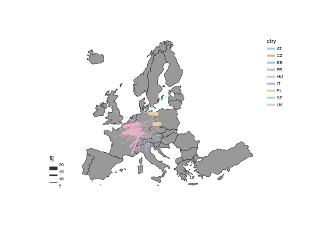

Plot a layer of colored and graduated links. Links are plotted according to discrete classes of widths. Colors depends on a discrete variable of categories.
gradLinkTypoLayer(spdf, df, spdfid = NULL, spdfids, spdfide, dfid = NULL,
dfids, dfide, var, breaks = getBreaks(v = df[, var], nclass = 4, method =
"quantile"), lwd = c(1, 2, 4, 6), var2, col = NULL, colNA = "white",
legend.title.cex = 0.8, legend.values.cex = 0.6, legend.values.rnd = 0,
legend.var.pos = "bottomleft", legend.var.title.txt = var,
legend.var.frame = FALSE, legend.var2.pos = "topright",
legend.var2.title.txt = var2, legend.var2.values.order = NULL,
legend.var2.nodata = "no data", legend.var2.frame = FALSE, add = TRUE)
Arguments
- spdf
- SpatialLinesDataFrame; a link layer.
- df
- data frame with identifier(s) and a variable.
- spdfid
- unique identifier in spdf (spdfids, spdfide, dfids and dfide are not used).
- spdfids
- identifier of starting points in spdf (spdfid and dfid are not used).
- spdfide
- identifier of ending points in spdf (spdfid and dfid are not used).
- dfid
- unique identifier in df (spdfids, spdfide, dfids and dfide are not used).
- dfids
- identifier of starting points in df (spdfid and dfid are not used).
- dfide
- identifier of ending points in df (spdfid and dfid are not used).
- var
- name of the variable used to plot the links widths.
- breaks
- break values in sorted order to indicate the intervals for assigning the lines widths.
- lwd
- vector of widths (classes of widths).
- var2
- name of the variable used to plot the links colors.
- col
- color of the links.
- colNA
- no data color.
- legend.title.cex
- size of the legend title.
- legend.values.cex
- size of the values in the legend.
- legend.values.rnd
- number of decimal places of the values in
the legend.
- legend.var.pos
- position of the legend for var, one of "topleft", "top",
"topright", "left", "right", "bottomleft", "bottom", "bottomright".
- legend.var.title.txt
- title of the legend (numeric data).
- legend.var.frame
- whether to add a frame to the legend (TRUE) or
not (FALSE).
- legend.var2.pos
- position of the legend for var2, one of "topleft", "top",
"topright", "left", "right", "bottomleft", "bottom", "bottomright".
- legend.var2.title.txt
- title of the legend (factor data).
- legend.var2.values.order
- values order in the legend, a character vector
that matches var modalities. Colors will be affected following this order.
- legend.var2.nodata
- text for "no data" values
- legend.var2.frame
- whether to add a frame to the legend (TRUE) or
not (FALSE).
- add
- whether to add the layer to an existing plot (TRUE) or
not (FALSE).
Note
Unlike most of cartography functions, identifiers fields are mandatory.
See also
getLinkLayer, propLinkLayer, legendGradLines, gradLinkLayer
Examples
# Countries of agreements
twincities.df$ctry <- substr(twincities.df$j,1,2)
# Agreements with german cities
twincitiesok <- twincities.df[substr(twincities.df$i,1,2)=="DE",]
# plot the colored and graduated links
gradLinkTypoLayer(spdf = twincities.spdf, df = twincitiesok,
spdfids = "i", spdfide = "j",
dfids = "i", dfide = "j",
var = "fij", breaks = c(5,10,15,20),
lwd = c(1,4,8),
var2 = "ctry", add = TRUE)
